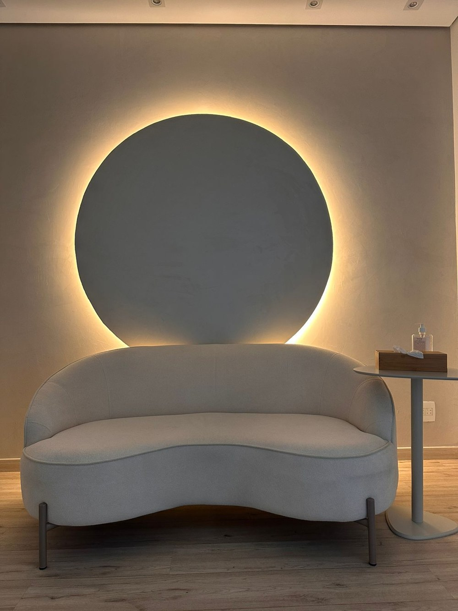

Psicologia clínicaBelo Horizonte · MG
Mariana Araújo
Psicóloga clínica, professora universitária e escritora. Psicoterapia individual para adultos, na Savassi e online.
“Te ajudo a entender suas emoções, silenciar o ruído de fora e ouvir sua própria verdade”
— Mariana, no Instagram ↗
Atendimento
O que cabe em uma conversa.
Psicoterapia individual
Um espaço para a sua história
Emoções, história pessoal, reflexões e autoconceito, em uma conversa individual para adultos. Presencial ou por vídeo.
Conhecer o atendimento →Emoções e estresse
Dar espaço ao que se sente
O que se sente, no contexto de cada experiência.
Conhecer →Relações e comunicação
Você, o outro e o encontro
Convivência, expressão e limites.
Conhecer →Atendimento online
A conversa também por vídeo
Psicoterapia online para adultos.
Conhecer →Palavras de Mariana
Reflexões sobre emoções e relações
Trechos de respostas públicas escritas por ela.
Ler →O conteúdo deste site é informativo: não faz diagnóstico nem substitui o atendimento. Cada processo é conversado de forma individual.
Quando procurar
O que pode trazer você à psicoterapia?
As emoções parecem demais
Emoções, estresse e história pessoal fazem parte do trabalho de Mariana. A conversa começa pelo que você sente, no contexto da sua vida.
Emoções e estresseA convivência ficou difícil
Perceber o que incomoda, quais emoções aparecem e o que é seu e o que é do outro: um tema que Mariana já abordou em resposta pública.
Relações e comunicaçãoMedo ou insegurança nas relações
Medos e inseguranças podem ser acolhidos em uma conversa individual, com espaço para o autoconhecimento.
Palavras de MarianaPrefiro conversar de casa
O atendimento também acontece por vídeo, para adultos. As orientações de acesso são combinadas com o consultório.
Atendimento onlineComo começa
Do primeiro contato à primeira sessão.
- 01Primeiro contato
Uma mensagem no WhatsApp ou uma ligação para tirar dúvidas sobre o atendimento.
- 02Combinar o formato
Presencial, na Savassi, ou por vídeo. Dia, horário e condições são confirmados pelo consultório.
- 03A conversa
Um espaço individual para falar de emoções, relações e da sua história.

Um espaço de conversaA psicóloga
Escuta, estudo e palavra escrita.
Mariana Araújo é psicóloga clínica, professora universitária e escritora. Atende adultos em psicoterapia individual, na Savassi e online.
- Especialização acadêmica · UFMGPsicologia Clínica
- Especialização acadêmica · CoimbraTrauma
- FormaçãoGestalt-terapia e Focusing
- Também no percursoComunicação Não Violenta e Abordagem Centrada na Pessoa
Nas palavras de Mariana
“Nas sessões comigo, você vai encontrar um espaço para acolher e gerenciar suas emoções.”
Mariana Araújo · apresentação profissional ↗
Escrita
Reflexões, em suas próprias palavras.
“É importante observar o que te incomoda e quais emoções surgem com essa situação.”
“A autoaceitação e o autoconhecimento seriam seus parceiros de jornada!”
Onde atendo
Na Savassi, em Belo Horizonte, e online.
Onde atendo
Consultório na Savassi
Rua Alagoas, 1314 · SavassiBelo Horizonte/MG
Atendimento presencial com horário combinado e, para quem prefere, por vídeo. Confirme dia, horário e condições com o consultório.
Perguntas frequentes
Antes do primeiro contato
Para quem é o atendimento?
Para adultos, em psicoterapia individual.
Há atendimento online?
Sim. Mariana atende presencialmente na Savassi e também por vídeo. As orientações de acesso são combinadas com o consultório.
Escolher dia e hora já marca a sessão?
Não. O formulário só prepara um pedido de preferência. Você revisa e envia pelo WhatsApp, e o consultório confirma a disponibilidade.
Preciso contar o que estou sentindo no pedido?
Não. Preencha apenas dia, horário e, se quiser, o formato. Sua história fica para a conversa.
O site faz avaliação ou diagnóstico?
Não. O conteúdo é informativo e não substitui o atendimento psicológico.
Pedido de horário
Qual dia e horário funcionam para você?
Um pedido simples para dar o primeiro passo. Presencial na Savassi ou por vídeo.
Contato
O próximo passo pode ser uma conversa.
Rua Alagoas, 1314 · Savassi · Belo Horizonte · e online · (31) 99912-5112